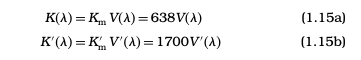
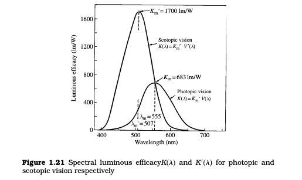

Light, Vision and Photometry
CALCULATION AND MEASUREMENT OF
PHOTOMETRIC QUANTITIES
As described above, radiometric quantities can be converted into
photometric quantities and vice versa by the equation (photometric
quantity) = K��×(radiometric quantity). One lumen corresponds
by definition to 1/683 W of a monochromatic light of �m = 555 nm,
which is the wavelength where V�� has its maximum value of unity.
Thus, Km , the maximum luminous efficacy of radiation for photopic
vision is 683 lm/W. In the case of scotopic vision, on the other hand,
V
�� = 0.40175 at � = 555 nm as can be obtained by interpolating
the values in Table 1.1. For monochromatic light having a radiant
intensity of 1/683 W at � = 555 nm to yield a luminous flux of 1 lm
in scotopic vision, K
m, the maximum luminous efficacy for scotopic
vision must be set to 683/0.40175 = 1700 lm/W. This maximum
occurs at �
m = 507 nm. Thus, Equations 1.2a and 1.2b can be
written explicitly as

Figure 1.21 shows the comparison between the spectral luminous efficacies K�� and K
�� obtained through Figure 1.10 and
Equations 1.15a and 1.15b. In general, photometric quantities for
photopic vision are used more frequently than those for scotopic

vision. Accordingly, the following explanation is given using the
symbols for photopic vision.
In the above description, only monochromatic light is treated.
However, in daily life, monochromatic light is rare, and, in general,
polychromatic light, such as sunlight or light emitted from an artifical lamp with a continuous or partly continuous polychromatic
spectrum, is used. By finely dividing a polychromatic light as is
shown . it can be considered to consist of a number
of near-monochromatic components.